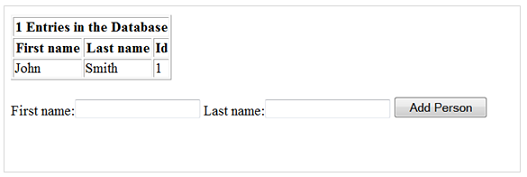

Adding Container-Managed Persistence with JPA (Java EE 6 Web Profile SDK)
This step-by-step tutorial shows how you can use JPA together with EJB to apply container-managed persistence in a simple Java EE web application that manages a list of persons.
| Steps | Sample Application |
|---|---|
| Prerequisites |
The application is also available as a sample in the SDK for Java EE 6 Web Profile: Sample name: persistence-with-ejb Location: <sdk>/samples folder More information: Samples |
| 1. Create a Dynamic Web Project and Servlet | |
| 2. Create the JPA Persistence Entity | |
| 3. Configure the persistence.xml File of the Person Entity | |
| 4. Create an EJB Session Bean | |
| 5. Prepare the Web Application Project for JPA | |
| 6. Extend the Servlet to Use Persistence | |
| 7. Test the Web Application on the Local Server | |
| 8. Deploy Applications Using Persistence on the Cloud from Eclipse | |
| 9. Configure Applications Using the Cockpit | |
| 10. Start Applications Using Eclipse |
You have downloaded and set up your Eclipse IDE, SAP Cloud Platform Tools for Java, and SDK.
For more information, see Setting Up the Development Environment.
- Download the latest 2.5.x version of EclipseLink from: http://www.eclipse.org/eclipselink/downloads

Select the EclipseLink 2.5.x Installer Zip (intended for use in Java EE environments).
- Extract the archive. You will need to add the EclipseLink JAR to your web application in a later step.
Create a dynamic web project with the JPA project facet. This enables the relevant JPA tooling and adds the required libraries and artifacts, such as the persistence.xml file. Then add a servlet (you will extend it in step 6 to use the JPA persistence entity and EJB session bean).
- From the Eclipse main menu, choose
 File
File  New Dynamic Web Project
New Dynamic Web Project  .
. - On the Dynamic Web Project screen, define the following
settings:
- Enter the Project name persistence-with-ejb.
- In the Target Runtime pane, select Java EE 6 Web Profile as the runtime you want to use to deploy the application.
- In the Dynamic web module version section, select 3.0.
- In the Configuration section, choose Modify and select the JPA checkbox in the Project Facets screen.
- Choose OK and return to the Dynamic Web Project screen.
- Choose Next

- On the Java screen, leave the default settings and choose Next.
- On the JPA Facet
screen, define the following settings:
- In the Platform section, select EclipseLink 2.4.x/2.5.x.
- In the JPA implementation section, select Disable Library Configuration.
- In the Persistent class management section, make sure that Discover annotated classes automatically is selected and choose Next.
- In the Web Module configuration settings, select the Generate web.xml deployment descriptor checkbox and choose Finish.
- To add a servlet to your project, choose File New Servlet from the Eclipse main menu.
- Enter the Java package com.sap.cloud.sample.persistence and the class name PersistenceEJBServlet.
- To generate the servlet, choose Finish.
Create a JPA persistence entity class named Person. Add an auto-incremented ID to the database table as the primary key and person attributes. You also need to define a query method that retrieves a Person object from the database table. Each person stored in the database is represented by a Person entity object.
- In the Project Explorer view, select the persistence-with-ejb/Java Resources/src/com.sap.cloud.sample.persistence node.
- From the Eclipse main menu, choose File New Other Class and choose Next.
- Make sure that the Java package is com.sap.cloud.sample.persistence.
- Enter the class name Person and choose Finish.
- Replace the entire class with the
following content:
package com.sap.cloud.sample.persistence; import javax.persistence.Basic; import javax.persistence.Entity; import javax.persistence.GeneratedValue; import javax.persistence.Id; import javax.persistence.NamedQuery; import javax.persistence.Table; /** * Class holding information on a person. */ @Entity @Table(name = "T_PERSON") @NamedQuery(name = "AllPersons", query = "select p from Person p") public class Person { @Id @GeneratedValue private Long id; @Basic private String firstName; @Basic private String lastName; public long getId() { return id; } public void setId(long newId) { this.id = newId; } public String getFirstName() { return this.firstName; } public void setFirstName(String newFirstName) { this.firstName = newFirstName; } public String getLastName() { return this.lastName; } public void setLastName(String newLastName) { this.lastName = newLastName; } } - Save the class.
In the persistence-with-ejb/Java Resources/src/META-INF folder, define additional settings in the persistence.xml file:
- Select
persistence.xml, and from the context menu choose Open With Persistence XML Editor .
- On the General tab, make sure that org.eclipse.persistence.jpa.PersistenceProvider is entered in the Persistence provider field.
- On the Options tab, make sure that the DDL generation type Create Tables is selected.
- On the Connection tab, select the transaction type JTA.
- Save the file.
Create an EJB session bean to handle the database operations.
- In the Project Explorer view, select the persistence-with-ejb/Java Resources/src/com.sap.cloud.sample.persistence node.
- From the Eclipse main menu, choose File New Other EJB Session Bean (EJB 3.x) and choose Next.
- Make sure that the Java package is com.sap.cloud.sample.persistence.
- Enter the class name PersonBean, leave the default setting Stateless, and choose Finish.
- Leave the default setting Stateless and choose Finish.
- Replace the entire class with the
following content:
package com.sap.cloud.sample.persistence; import java.util.List; import javax.ejb.LocalBean; import javax.ejb.Stateless; import javax.persistence.EntityManager; import javax.persistence.PersistenceContext; /** * Session Bean implementation class PersonBean */ @Stateless @LocalBean public class PersonBean { @PersistenceContext private EntityManager em; public List<Person> getAllPersons() { return em.createNamedQuery("AllPersons").getResultList(); } public void addPerson(Person person) { em.persist(person); em.flush(); } } - Save the class.
Add the XSS Protection Library to the web application project.
- In the Project Explorer view, select the persistence-with-ejb/WebContent/WEB-INF/lib node.
- From the context menu, choose Import General File System and choose Next.
- Browse to the local directory where you downloaded and unpacked the SDK for Java EE 6 Web Profile, select the repository/plugins directory, and choose OK.
- Select the com.sap.security.core.server.csi_1.x.y.jar checkbox and choose Finish.
If you intend to deploy with the SAP HANA database, add the EclipseLink JAR file to the web application project:
- In the Project Explorer view, select the persistence-with-ejb/WebContent/WEB-INF/lib node.
- From the context menu, choose Import General File System and choose Next.
- Browse to your local directory where you downloaded and extracted the EclipseLink JAR (see the Prerequisites section). Select the eclipselink/jlib directory and make sure the eclipselink.jar checkbox is selected.
- Choose Finish.
Extend the servlet to use the Person entity and EJB session bean. The servlet adds Person entity objects to the database, retrieves their details, and displays them on the screen.
- In the Project Explorer view, expand the persistence-with-ejb/Java Resources/src/com.sap.cloud.sample.persistence node.
- Select
PersistenceEJBServlet.java, and from the context menu
choose Open With Java Editor .
- Replace the entire servlet class with
the following content:
package com.sap.cloud.sample.persistence; import java.io.IOException; import java.sql.SQLException; import java.util.List; import javax.ejb.EJB; import javax.servlet.ServletException; import javax.servlet.annotation.WebServlet; import javax.servlet.http.HttpServlet; import javax.servlet.http.HttpServletRequest; import javax.servlet.http.HttpServletResponse; import org.slf4j.Logger; import org.slf4j.LoggerFactory; import com.sap.security.core.server.csi.IXSSEncoder; import com.sap.security.core.server.csi.XSSEncoder; /** * Servlet implementation class PersistenceEJBServlet */ @WebServlet("/") public class PersistenceEJBServlet extends HttpServlet { private static final long serialVersionUID = 1L; private static final Logger LOGGER = LoggerFactory .getLogger(PersistenceEJBServlet.class); @EJB PersonBean personBean; /** {@inheritDoc} */ @Override protected void doGet(HttpServletRequest request, HttpServletResponse response) throws ServletException, IOException { response.getWriter().println("<p>Persistence with JPA!</p>"); try { appendPersonTable(response); appendAddForm(response); } catch (Exception e) { response.getWriter().println( "Persistence operation failed with reason: " + e.getMessage()); LOGGER.error("Persistence operation failed", e); } } /** {@inheritDoc} */ @Override protected void doPost(HttpServletRequest request, HttpServletResponse response) throws ServletException, IOException { try { doAdd(request); doGet(request, response); } catch (Exception e) { response.getWriter().println( "Persistence operation failed with reason: " + e.getMessage()); LOGGER.error("Persistence operation failed", e); } } private void appendPersonTable(HttpServletResponse response) throws SQLException, IOException { // Append table that lists all persons List<Person> resultList = personBean.getAllPersons(); response.getWriter().println( "<p><table border=\"1\"><tr><th colspan=\"3\">" + (resultList.isEmpty() ? "" : resultList.size() + " ") + "Entries in the Database</th></tr>"); if (resultList.isEmpty()) { response.getWriter().println( "<tr><td colspan=\"3\">Database is empty</td></tr>"); } else { response.getWriter() .println( "<tr><th>First name</th><th>Last name</th><th>Id</th></tr>"); } IXSSEncoder xssEncoder = XSSEncoder.getInstance(); for (Person p : resultList) { response.getWriter().println( "<tr><td>" + xssEncoder.encodeHTML(p.getFirstName()) + "</td><td>" + xssEncoder.encodeHTML(p.getLastName()) + "</td><td>" + p.getId() + "</td></tr>"); } response.getWriter().println("</table></p>"); } private void appendAddForm(HttpServletResponse response) throws IOException { // Append form through which new persons can be added response.getWriter() .println( "<p><form action=\"\" method=\"post\">" + "First name:<input type=\"text\" name=\"FirstName\">" + " Last name:<input type=\"text\" name=\"LastName\">" + " <input type=\"submit\" value=\"Add Person\">" + "</form></p>"); } private void doAdd(HttpServletRequest request) throws ServletException, IOException, SQLException { // Extract name of person to be added from request String firstName = request.getParameter("FirstName"); String lastName = request.getParameter("LastName"); if (firstName != null && lastName != null && !firstName.trim().isEmpty() && !lastName.trim().isEmpty()) { Person person = new Person(); person.setFirstName(firstName); person.setLastName(lastName); personBean.addPerson(person); } } } - Save the servlet. The project should compile without any errors.
- To test your web application on the
local server, follow the steps for deploying a web application locally as
described in Deploying Locally from Eclipse IDE.
You should see the following output:

- Enter a first name (for example,
John) and a last name (for example,
Smith) and choose Add Person.
John Smith is added to the database as shown below:

If you add more names to the database, they will also be listed in the displayed table. This confirms that you have successfully enabled persistence using the Person entity.
To test your web application in the cloud, define a server in Eclipse. Use the cockpit to create a default binding for your application. Add the application to the new server and start it. This will the deploy the application on the cloud, and you should see the same output as when the application was tested on the local server.
Prerequisites
- You have set up your runtime environment in the Eclipse IDE. For more information, see Setting Up the Runtime Environment.
- You have developed or imported a Java Web application in Eclipse IDE. For more, information, see Developing Java Applications or Importing Samples as Eclipse Projects
- Switch to the Servers view in the Eclipse IDE.
- Open the context menu and define a server with the following settings:
- Select the server type SAP SAP Cloud Platform .
- Use the landscape host depending on your account type and choose Next. For more information, see Landscape Hosts.
- Specify your application name (only lowercase Latin letters and digits
are allowed).Note The application name should be unique enough so that your deployed application can be easily identified.
- Select a runtime. If you leave the Automatic option, the server will load the target runtime of your application.
- Enter your account name, e-mail or user name, and password and choose
Next.
 Note
Note- If you have previously entered an account and user name for your landscape host, these names will be prompted to you in dropdown lists.
- A dropdown list will be displayed as well for previously entered landscapes hosts.
- If you select the Save password box, the entered password for a given user name will be remembered and kept in the secure store.
- Do not select your application on the Add and
Remove screen.Note Adding an application would automatically start this application with the effect that it would fail because no data source binding exists. You will add an application in a later step.
- Choose Finish.
- Select the server type
- On the Servers view, open the context menu for the server
you just created and choose Show In Cockpit . The cockpit opens inside Eclipse.
- In the cockpit, select an account and choose Persistence Databases & Schemas in the navigation area.
- Select the database that you want to create a binding for.
- Choose Data Source Bindings in the navigation
area.Note For more information on Data Source Bindings, see Binding Databases.
- Define a binding (<DEFAULT>) for the application and select a
database ID. Choose Save.
This creates a default binding for the application. You can use an existing database or create a new one.
- On the Servers view in Eclipse, open the context menu for
the server and choose Add and Remove... <application name> . To add the application to the server, add the application to the
panel on the right side. Choose Finish.
- Start the server. This will deploy the application and start it on the SAP Cloud Platform.
You can access the application by clicking the application URL on the application overview page in the cockpit.
You cannot deploy multiple applications on the same application process. Deployment of a second application on the same application process overwrites any previous deployments. If you want to deploy several applications, deploy each of them on a separate application process.